operanthouseのヘッダー
Kitaya lab
レバーモジュール
レバーを出し入れするサーボの配線をスイッチ基盤の付けます。
サーボの延長電線を作ります。
＜左サーボ用＞
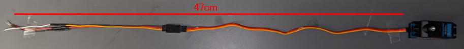
＜右サーボ用＞
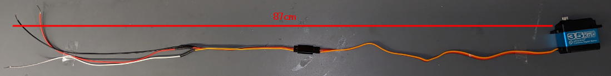
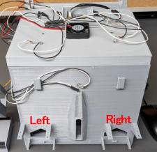
これらのサーボ用の電線とArduinoへの電線をスイッチ基盤にハンダ付けします。
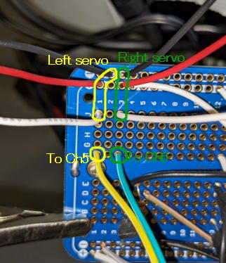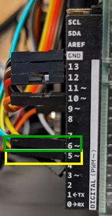
レバーモジュールを作製します。
ここではレバーを見やすくするため白で印刷していますが、何色でも構いません。
レバーモジュールにパーツを接着します。
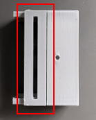
配線を作製します。
<グラウンド線>
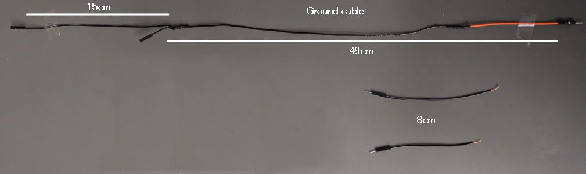
<左レバーモジュール用>
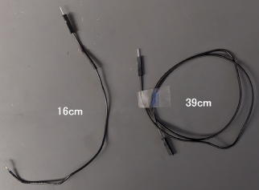
<右レバーモジュール用>
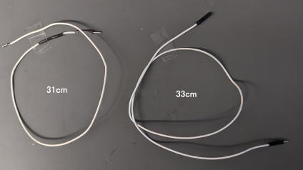
左側のレバーモジュールから作って行きます。
手前から20mmの位置に印を付け、図の様に銅テープを貼ります。
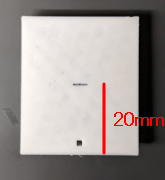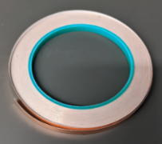 >>> 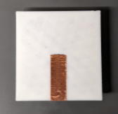
10cmの細い電線を用意します(写真ではたまたま手元にあった0.3mmの同軸ケーブルを使っていますが、1ラインのケーブルで大丈夫です)。
この電線はレバーにテンションを掛けないため、柔らかい必要があります。
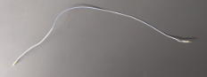
電線を銅テープの上に設置し、はんだ付けします。
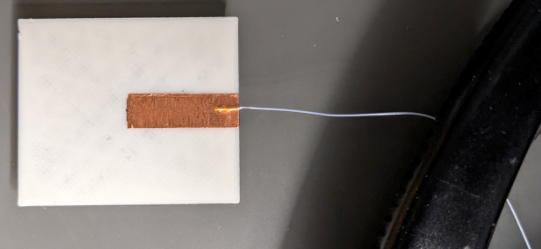
レバーはPLAなので200℃程度で溶けるので素早くはんだを乗せます。
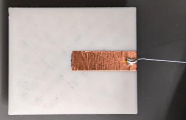
そして16cmの電線とハンダ付けします。
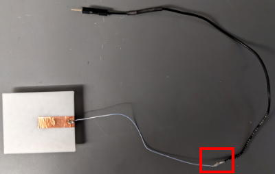
ここのハンダ付けは難しいと思いますが、このように太い側のワイヤーの中に細い線を差し込むようにすれば仮止めできます。
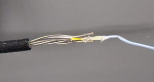

銅テープの表面をアルコールで拭いて皮脂や汚れを除去します。
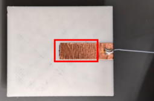
レバーをレバーケースに入れます。
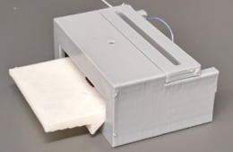
レバーケースカバーをレバーケースに両面テープで貼ります。カバーはレバーに触れるか触れないかの位置にします(緑の場所)。
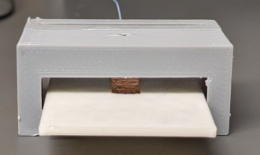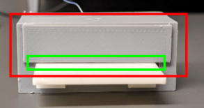
8cmの電線をM2x15mmのネジに繋ぎます。
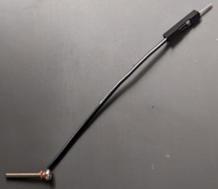
ナットで電線をネジに固定します。
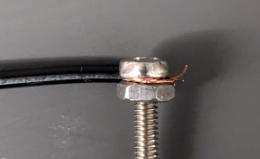
ハンダを電線部分に流し込んでナットを固定します。
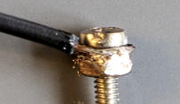
ネジの先端をヤスリで削り、汚れや皮脂などを落とします。
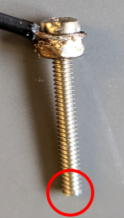
さらに電線の繋ぎ目は切れやすいので瞬間接着剤で補強します。
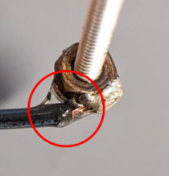
レバーケースに設置します。
※レバーケースに設置した状態でネジをハンダづけしようとするとケースが溶けます。
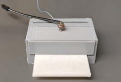
銅線テープから少し隙間があるくらいの位置までネジを回します。
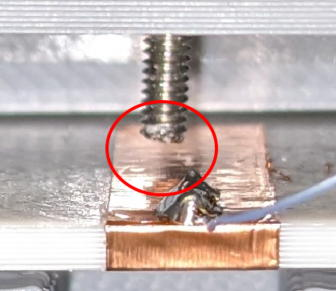
レバーを押して先端が2mmだけ下がるようにネジの深さを調整します。
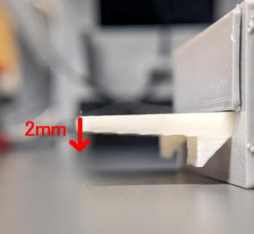
次にレバーモジュールガイドを組み立てます。印刷時にベッドに面していた側はつるつるなのでそれが内側を向くようにして、底と壁が外側でピッタリになるように瞬間接着剤で固定してください。
（レバーモジュールが内側でスライドするので接着剤が内側にはみ出たら拭って下さい）
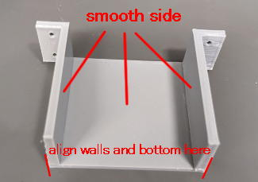
チャンバー内側からM2ネジで下側の穴を使ってガイドを固定します。
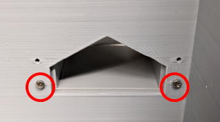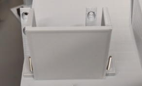
次にレバーホールカバーを仮止めします。
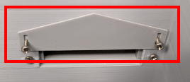
次にレバーモジュールを載せ、レバーをチャンバー内に付き出します。そしてカバーとレバーの隙間が1mm程度になる位置でネジを締め、カバーを固定します。
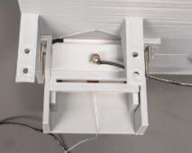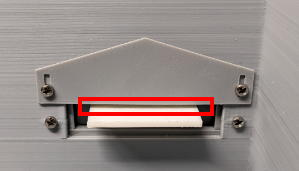
サーボに付属するアームの片側を写真の様にニッパーで除去し、M2x15mmネジを入れます。(固いと思いますが頑張ってください)
15mmのネジがない場合20mmのを切ればOKです。
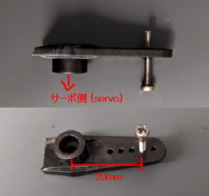
LeverConditioningTaskを開き、Ch5のMiddleの数値を100にして「Midボタン」を押して下さい。サーボが動きます。
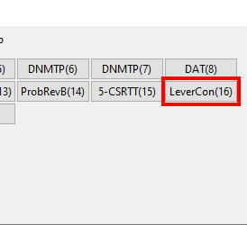 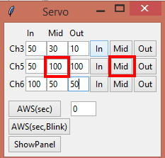
サーボはレバーモジュールが引き込まれた際の角度になっています。
この状態でサーボアームをこれくらいの角度ではめこみ、付属のネジで固定します。
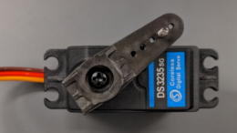
ネジの電線を右に出してサーボを設置し、サーボアームのネジがレバーモジュールのスリットに入るようにしてM3x20ネジで固定します。
またサーボアームのネジはサーボが動いてもレバーと干渉しない深さにして下さい。
（サーボ本体の位置が低すぎて干渉してしまう場合はM3のナットをスペーサーにしてサーボの位置を上げて下さい）
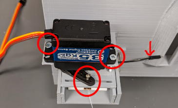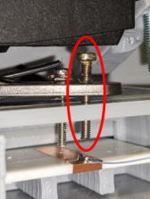
レバーの電線はツメに引っかけます。
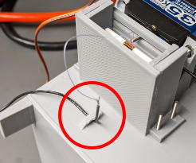
電線をArduinoへ接続します。グラウンド線はGNDへ、ネジ電線はdigital I/OのCh7へ接続します。
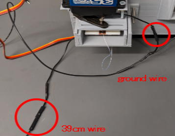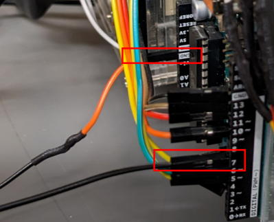
次にサーボ位置の調整を行います。
サーボのケーブルを接続して、Ch5のInsideの値を100から少しずつ小さい値に変えつつ「Inボタン」を押してレバーモジュールとチャンバーが触れる直前の角度を調べます。
※小さすぎる値を入れるとモジュールがチャンバーに衝突してしまうので注意して下さい。またサーボアームが配線にぶつからないようにして下さい。
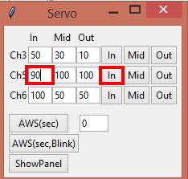
これはまだ隙間があります。
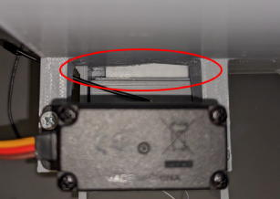
これでピッタリです。
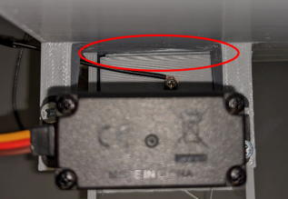
右側も同様に作業して行きます。
サーボのMiddle angleの角度はこれくらいにします。
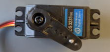
カイドとカバーを取り付け、サーボを設置し、電線を接続します。そして左レバー同様にサーボの位置を調整して下さい。
※ネジ電線は今度は左側に出します。
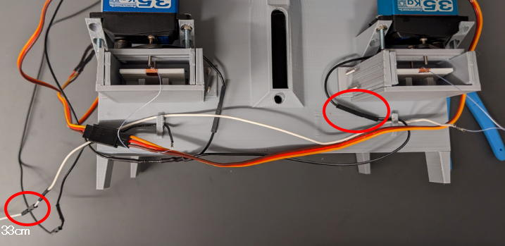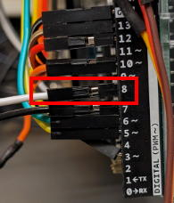
最後にレバープレスが認識されるか、LeverConditioningTaskを実行しテストして下さい。正しく認識されたら作業完了です。